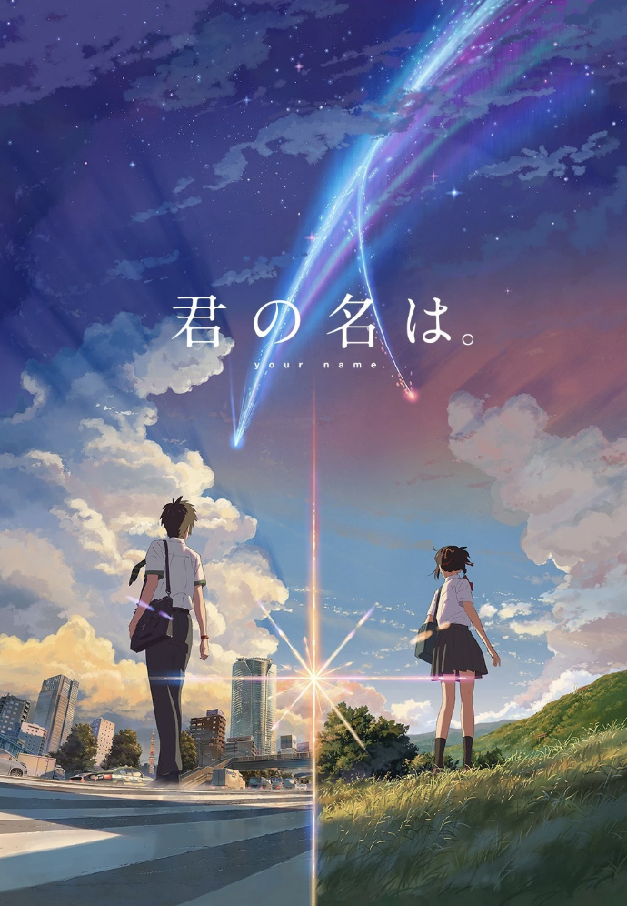
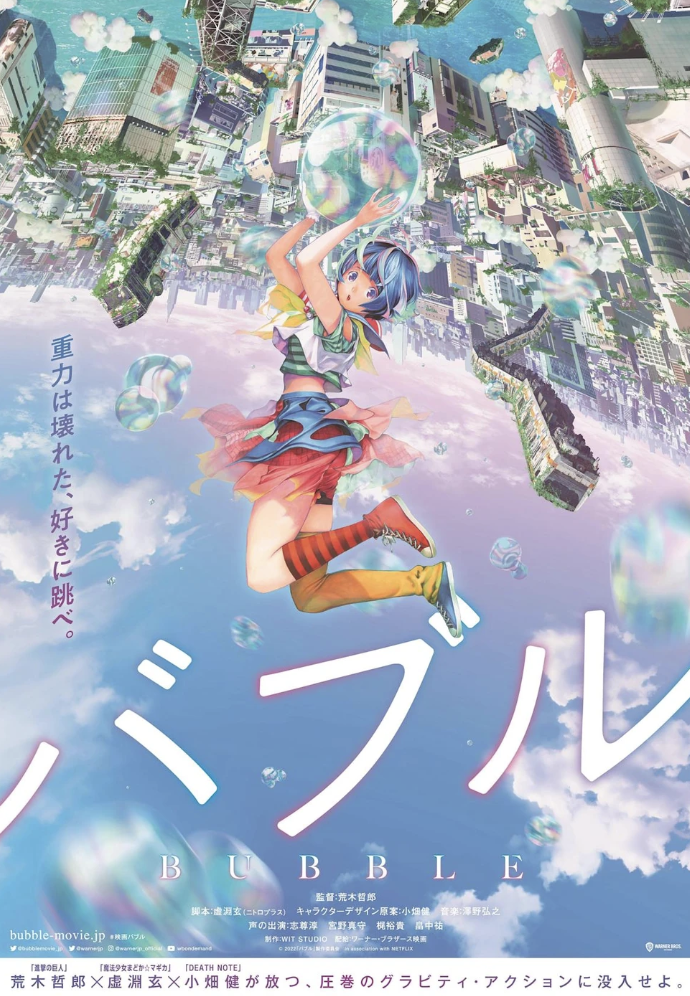
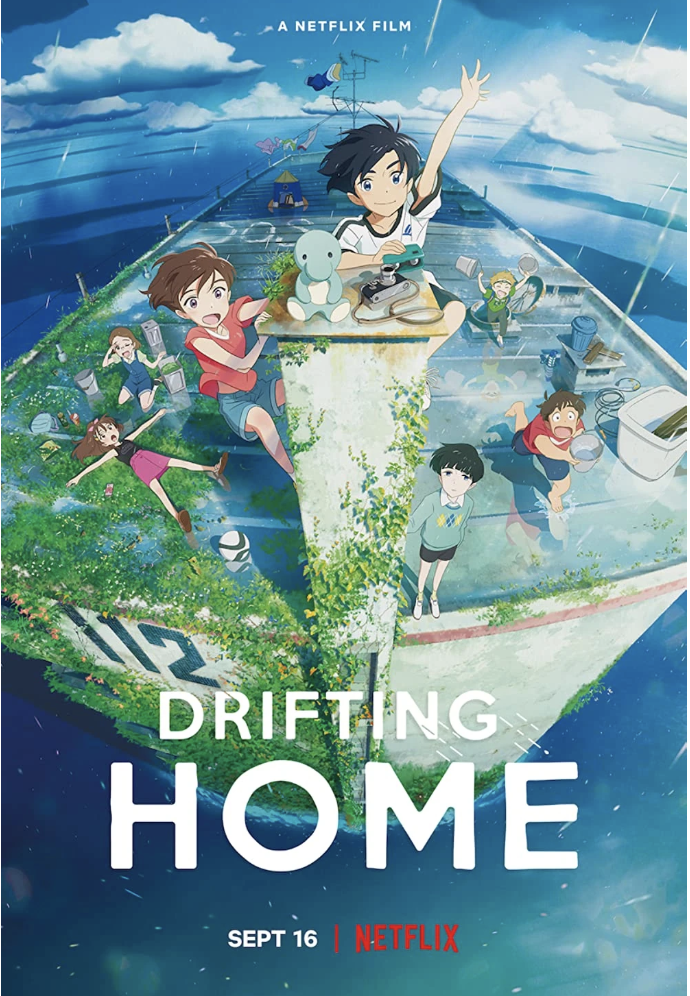
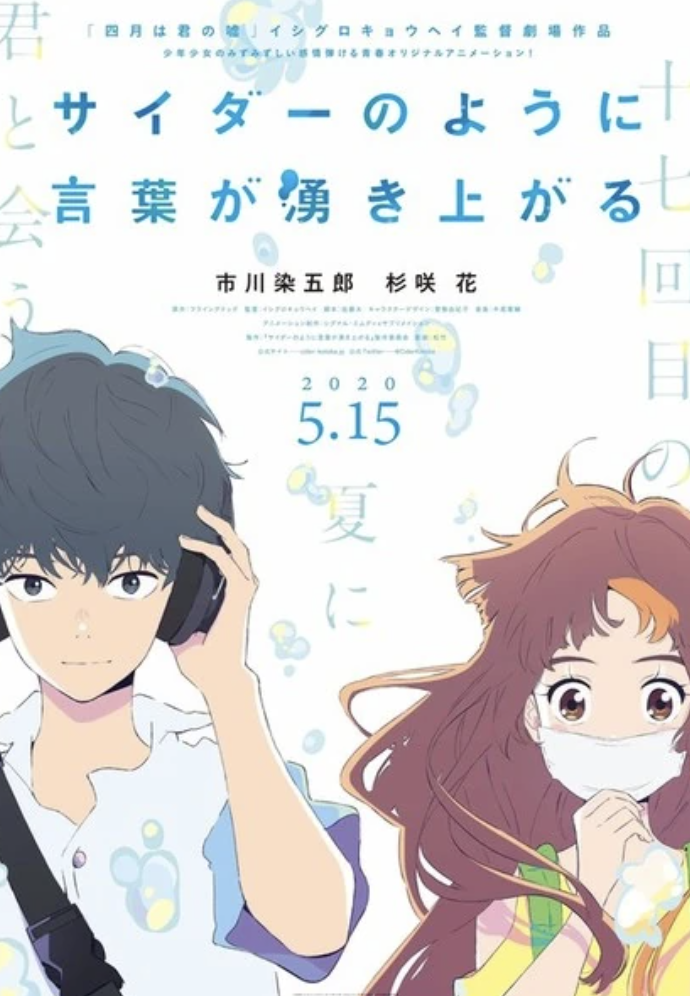
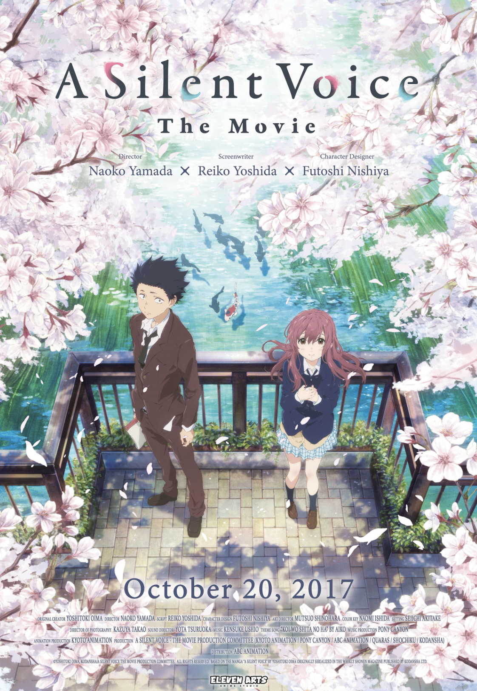

| Poster | Review | OST / Trailer |
|---|---|---|
|  | I watched 'Your Name' when I was younger, and it was one of my first ever anime movies. I found the artstyle in this movie very very pretty. The love story is well written; I thought that it felt real and it made me emotional. Whenever I see anime recommendation websites, Your Name is always at the top of the list. I think this movie is really good for a first anime. |
|
|  | Bubble is kind of like a modern retelling of the Little Mermaid. I found the concept interesting because it's based on a bunch of teenagers parkouring inside an abandoned Tokyo. I still listen to 'UTAtoHIBIKI', one of the songs in this movie often. The artstyle was also really good. I liked the story, but it didn't make me feel super emotional after watching. |
|
|  | I LOOOVED THIS MOVIE. I watched this during the pandemic at a time where I felt like life was super boring and I didn't have any aim or motivation to do anything. This follows a group of kids who wake up on a floating apartment This movie made me want to do more in life. I think it has a really good story/plot/writing and I love all the characters here. |
|
|  | This movie follows a girl who's kind of self-conscious of her smile, and a boy who's kind of shy and likes writing haikus. This movie has the best color palette ever, everything is so bright and pretty. It's pretty music centric, and the main characters end up together. This is one of my comfort movies because of the pretty art and simple plot. |
|
|  | 'A Silent Voice' is kind of a classic in anime movies. It's about a deaf girl who gets bullied by this boy when they're in kinder. The boy grows up but develops social anxiety. They both meet again while they're in high school and heal together. I CRIED when I watched this. I loved the two main characters, but many of the side characters annoyed me. I liked the plot a lot, and I constantly rewatch this movie. |